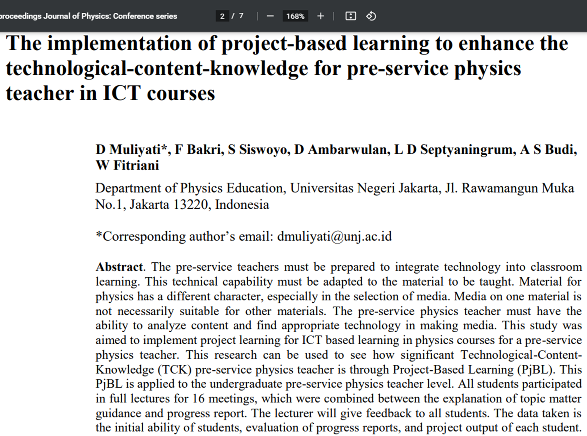

Project Experience

This Research talk about The implementation of project-based learning to enhance the technological-content-knowledge for pre-service physics teacher in ICT courses. This papper has been publishen in Journal of Physics:Conference Series 2020

This study produces educational physics games for mobile apps based on the journey of Joseph Black, scientists in the thermodynamics field. These apps aim to support the medium for learning physics. I used Articulate Storyline software to make this game